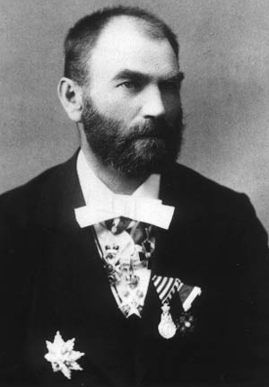

Милутин Ускоковић
Приповетка Потурченица Лејла, дело је аутора Милана Ђ. Милићевића. Први пут је објављена 1879. године у делу Зимње вечери : приче из народног живота у Србији, у Београду, од стране Државне штампарије.
Потурченица Лејла представља један од првих уметничких приказа турског Лесковца. У основи, ово је мелодрама где је представљена прича о љубави између Милете и Јане.
Чобаницу Јану, заљубљену у Милету, отео је лесковачки бег Асан, син Смаил-паше. Он ју је одвео у свој харем у Лесковцу, где је затим била потурчена. Потурченица Лејла (некада Јана), живећи лагодним животом и у богатству, убрзо је заборавила на свој род, веру прадедовску, па и на свог некадашњег вереника. Богато одевена и поносна, без икаквих емоција и сећања, дочекује у конаку своје родитеље и друге Србе.
Милићевић је представио живот и судбину Јане и Милете кроз стварне догађаје из историје нашег народа, конкретно покушај Срба да ослободе Власотинце и околину. Бег, заједно са својим женама и пратњом, бежи из Лесковца услед страха да ће устаници напасти и Лесковац и другу околину јужно од Ниша. У једном Хану, надомак Грделице, Асан-бега убија Милета. Током турског противнапада страдају Лејла (Јана), са читавим харемом, али и Милета, са целом својом дружином.
Илија Петровић Стреља, познат у народној књижевности и као Илија Делија, био је војвода из Првог српског устанка. По неким подацима, рођен је као Петар Петровић, али је своје име променио након приступања устаничкој војсци.
Стреља се појављује као један од споредних ликова у приповетки Потурченица Лејла. Његовој дружини се, у походу на југ Србије, прикључује Јанина (Лејлина) некадашња љубав, Милета. Стреља је у овој приповетки описан као смеђ, врло крупан човек, великог носа, бркова и необично крупних зуба. Након погибије Милете и његове дружине, Стреља одлази из Власотинца ка остатку српске војске која се спремала да освоји Ниш, али га тамо дочекује ужасно откриће, крах устаничке војске и новосазидана Ћеле-кула.

Ћеле-кула, рад Феликса Каница из 1863. године
Милан Ђ. Милићевић био је српски писац, публициста, етнограф и академик. Рођен је у Рипњу 1831. године, а преминуо је у Београду 1908. године. Један је од оснивача Српске књижевне задруге, а био је и члан Српског ученог друштва, Српске краљевске академије, Југословенске академије знаности и умјетности у Загребу, као и председник Српског археолошког друштва.
Милан Ђ. Милићевић
приредио Богдан Лазовић